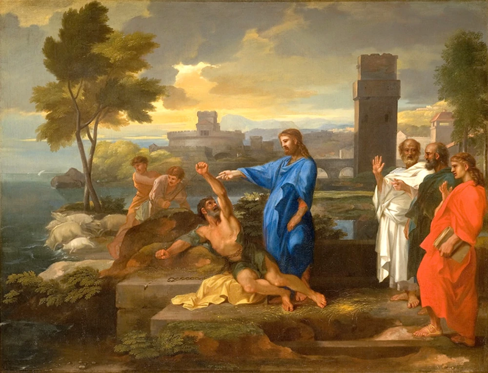

Castlevania: Symphony of the Night, es un videojuego de acción-aventura de gráficos 2D desarrollado y publicado por Konami en el año 1997. Es la treceava entrega de la saga Castlevania, siendo esta la primera publicada para PlayStation y Sega Saturn.

El juego obtuvo elogios generalizados, a menudo citado por los críticos como uno de los mejores videojuegos de todos los tiempos, elogiando sus innovaciones en el juego, la atmósfera, las imágenes y la banda sonora. También se considera un pionero del género Metroidvania, inspirando numerosos juegos de acción y aventuras basados en la exploración.
El desarrollo de todas sus características se atribuye a Koji Igarashi, el director del videojuego y uno de los miembros más jóvenes del equipo (para aquel entonces). Igarashi, un gran fan de los videojuegos 2D, se instrumentó mucho en refinar el planteamiento de control del videojuego. Otros miembros notables del equipo fueron la diseñadora Ayami Kojima y la compositora Michiru Yamane.
Historia
Una guerra sin fin, o eso parece... Con el misterioso surgimiento de un ser sobrenatural, el clan Belmont, una familia guerrera y poderosa, decide oponerse, iniciándose una guerra sin fin. Con la humanidad condenada al tormento costante del señor oscuro, los Belmont serán los encargados de evitar que la cólera de éste, el alma de dragón y demonio, DRÁCULA, no caiga sobre el mundo.
Con los diferentes intentos, se descubre que, al acabar con Drácula, este vuelve a ser revivido después de unos 100 años junto a su castillo.
En 1797, uno de los descentientes de los Belmont, Richter Belmont, se encuentra en el castillo, a punto de acabar con el Conde Drácula. Lo consigue, pero de repente Richter desaparece.

El castillo apareció de nuevo, pero 5 años después, y no había Belmonts que pudieran intervenir. Con el mundo entre las cuerdas, un misterioso hombre, llamado ALUCARD, despierta de lo que parece ser un sueño auto-inducido. Con un objetivo claro, decide investigar que es lo que pasa en el castillo. Maria Renard, amiga del desaparecido Richter, también se aventura dentro para intentar salvar a su amigo.
¿Qué está pasando? ¿Acaso es el fin de la humanidad? ¿Quién es Alucard? Sumérgete en las mazmorras del gran señor oscuro y descubre que esta ocurriendo...
ATENCIÓN
A partir de esta sección, se profundizará en el argumento, detallando muchos aspectos y caracteristicas del juego. ¡Si lo que quieres es no saber nada, no sigas leyendo! :O
Personajes
Alucard
Es el personaje principal, el cual despertó de su sueño eterno auto-inducido aparentemente a debido a los sucesos relacionados con la reaparición del castillo de Drácula. Se pone en marcha el mismo para averiguar la posible causa de su repentino despertar y saber que acontece en el castillo.

- Ocupación: Principe de los Vampiros
- Raza: Dhampir (Hijo de vampiro y humano)
- Arma principal: Espada de Alucard
- Habilidad principal: Dark metamorfosis
Richter Belmont
Héroe descendiente directo del clan Belmont quien derrotó a Drácula hace cinco años, pero que desapareció de forma repentina hace un año.
- Ocupación: Cazavampiros
- Raza: Humano
- Arma principal: Vampire Killer
- Habilidad principal: Armas secundarias (hacha, daga, cruz...)
Maria Renard
Ayudó a Richter a derrotar a Drácula hace cinco años. Después de que éste desapareciera, decidió emprender la búsqueda de su amigo extraviado.

- Ocupación: Cazavampiros
- Raza: Humana
- Arma principal: Armas y espiritus animales
- Habilidad principal: Item Crash
Maestro Bibliotecario
El maestro bibliotecario encargado de la gran biblioteca del castillo, donde el Conde Drácula mantiene su vasta colección de piezas de literatura encantadas y prohibidas. Parece serle leal a Drácula, aunque ayudara a Alucard por un precio adecuado.

- Ocupación: Bibliotecario y comerciante
- Raza: Humano
Barquero
Su papel en el videojuego es muy simple: esperar al protagonista para transportarlo a través de un río (cuando nadar no es una opción). A veces, para invocarlo se necesitan artículos específicos (como en este videojuego por ejemplo).
Lisa
La madre de Alucard. Fue quemada en la hoguera después de ser victima de falsas acusaciones de brujería, lo que causo la furia de Drácula hace muchos años. Ella habría amado a Drácula por toda eternidad.

- Ocupación: Curadora
- Raza: Humana
- Habilidad principal: Medicinas herbarias
Succubus
Demonio inferior bajo la apariencia de una mujer. Atrapa a Alucard en una especie de dimensión de pesadilla, en la cual disfraza su apariencia verdadera para tratar de engañarlo.
- Ocupación: Demonio
- Raza: Demonio inferior
- Arma principal: Garras
- Habilidad principal: Caminante de sueños
Death
Es la mano derecha del conde Drácula. Cuando Alucard ingresa al castillo es confrontado por él y le quita toda sus elementos equipados esparciéndolos por todo el castillo.
- Ocupación: Mano derecha de Drácula
- Raza: Desconocido
- Arma principal: Guadaña de la muerte
- Habilidad principal: Invocación, artes oscuras y tele-transportación
Shaft
El sacerdote oscuro que manipula a Richter y busca revivir a Drácula por segunda vez en este siglo.
- Ocupación: Sacerdote oscuro
- Raza: Humano
- Arma principal: Magia y hechizos elementales
- Habilidad principal: Hechicería oscura
Drácula
El amo del castillo demoníaco, antagonista principal y personaje jefe final. Enfrentado por Richter durante el preludio del videojuego y también por Alucard en su final.
- Ocupación: Antagonista principal, Señor oscuro
- Raza: Vampiro
- Arma principal: Magia oscura
- Habilidad principal: Poder de dominación y artes oscuras
Arsenal
| Crissaegrim | Es vagamente similar al Yasutsuna, pero dispara ondas de vacío en lugar de cuchillas circulares. | |
| Heaven Sword | Se lanza hacia adelante y luego vuelve hacia ti, como un boomerang | |
| Jewel Sword | Deja joyas como elementos al matar monstruos | |
| Marsil | Espada llameante que puede golpear hasta cuatro veces con su fuego. | |
| Masamune | Muy similar al Muramasa, excepto que no tiene la capacidad de chupar sangre fría. | |
| Mourneblade | Soul Steal: cada vez que atacas a un enemigo, ganarás un pequeño porcentaje de vida. | |
| Muramasa | Espada sedienta de sangre. Cuando está equipada, tendrás el hechizo Dark Metamorphosis | |
| Osafune | Un arma de dos manos, bastante fuerte. Contiene un movimiento de bola de fuego | |
| Rune Sword | Con un ataque normal, sale de las manos de Alucard, vuela en un arco y regresa muy rápido. | |
| Yasutsuna | Muy rápida y poderosa, atacará con un círculo de cuchillas fulminantes frente a Alucard. |
Bestiario
Beelzebub
Origenes:
En la demonología cristiana, Beelzebub es uno de los siete príncipes del infierno, según los puntos de vista católicos.
El Dictionnaire Infernal lo describe como una mosca demoníaca a la que también se conoce como el "Señor de las moscas". En fuentes cristianas y bíblicas posteriores, se le conoce como otro nombre para el Diablo.
Cerberus

Origenes:
En la mitología griega, Cerberos (en griego Κέρβερος Kerberos, "demonio del pozo") era el perro de Hades. Era un monstruo canino de tres cabezas (aunque a veces se dice que tenía cincuenta o cien) y con una serpiente de muchas cabezas en lugar de cola.
Cerberos custodiaba la puerta del Hades y se aseguraba de que los muertos no salieran y los vivos no pudieran entrar. Era hijo de Echidna y Typhon, y hermano de Orthrus, un Hellhound de dos cabezas.
Gaibon y Slogra


Origenes:
En arquitectura, una gárgola es un grotesco tallado o formado con un pico diseñado para transportar agua desde un techo y alejarla del costado de un edificio.
Evitando que el agua de lluvia corra por las paredes de mampostería y erosione el mortero entre ellas, las gárgolas suelen ser animales fantásticos alargados porque la longitud de la gárgola determina qué tan lejos se lanza el agua desde la pared.
Hypogrifo
Origenes:
El hipogrifo es una criatura mitológica que nace del cruce entre un grifo y una yegua. Su cabeza, alas, pecho y patas delanteras son como las de un águila, características heredadas del padre, y el resto del cuerpo es como el de un caballo, como la madre. Dado que el grifo generalmente se representa como una criatura que detesta a los caballos, cazándolos y matándolos, puede ser difícil imaginar cómo podría concebirse un hipogrifo.

El hipogrifo y el grifo se confunden con frecuencia entre sí. La principal diferencia entre ambas criaturas es que el Hipogrifo tiene el cuerpo de un caballo y el Grifo tiene el cuerpo de un león.
Legion

Origenes:
El origen del diseño de Legion proviene de un relato bíblico sobre un demonio –o varios demonios– que poseyó a un hombre. El Nuevo Testamento describe un encuentro en el que Jesús sanó a un hombre de Gadara poseído por demonios mientras viajaba, en un evento que llegó a conocerse como "el exorcismo del endemoniado de Gerasene".
Jesús se acercó y llamó al demonio para que saliera del hombre y le preguntó su nombre, a lo que el demonio respondió: "Mi nombre es Legión, porque somos muchos". Así, del concepto de estar compuesto por "muchos" surgió el diseño del caparazón compuesto por una gran cantidad de cuerpos humanos.
Malphas

Origenes:
Malphas se describe en el Ars Goetia como un poderoso "Gran Príncipe del Infierno", al mando de cuarenta legiones de demonios y siendo el segundo al mando de Satanás. Aparece como un cuervo, pero si se le solicita, se parecerá a un hombre con una voz ronca.

Malphas se especializa en la construcción de casas, torres altas y fortalezas, derriba los edificios de los enemigos, puede destruir los deseos o pensamientos de los enemigos (y/o darlos a conocer al conjurador) y todo lo que han hecho, otorga buenos familiares y puede reunir rápidamente a artífices de todos los lugares del mundo.
Minotauro

Origenes:
En la mitología griega, el Minotauro era una criatura con cabeza de toro sobre el cuerpo de un hombre. Vivía en el centro del Laberinto, que era una elaborada construcción similar a un laberinto diseñada por el arquitecto Dédalo y su hijo Ícaro, por orden del rey Minos de Creta. El Minotauro finalmente fue asesinado por el héroe ateniense Teseo.
El término Minotauro deriva del griego antiguo Μῑνώταυρος, un compuesto del nombre Μίνως (Minos) y el sustantivo ταύρος "toro", traducido como "(el) Toro de Minos".
Scylla

Origenes:
En la mitología griega, Scylla era uno de los dos monstruos (el otro era Caribdis) que vivían a ambos lados de un estrecho canal de agua, conocido hoy como el Estrecho de Messina. Los dos lados del estrecho estaban al alcance de una flecha el uno del otro, tan cerca que los marineros que intentaban evitar a Caribdis pasarían demasiado cerca de Escila y viceversa.

Era un monstruo marino horriblemente grotesco, con seis cuellos largos equipados con cabezas espeluznantes, cada una de las cuales contenía tres filas de dientes afilados. Su cuerpo constaba de doce patas caninas y la cola de un pez. Otros relatos la retratan con serpientes y perros ladrando en lugar de extremidades inferiores.
Hombrelobo

Origenes:
Un hombre lobo es un ser humano mitológico o folclórico con la capacidad de cambiar de forma a un lobo, ya sea a propósito o después de haber sido sometido a una maldición o aflicción (a menudo una mordedura o un arañazo de otro hombre lobo).

En la literatura y la mitología griega antigua se encuentran algunas referencias a hombres que se convierten en lobos. Los Neuri eran una tribu que se transformaba en lobos una vez al año durante varios días y luego volvía a su forma humana. Lycaon se transformó en lobo porque había asesinado ritualmente a un niño. Virgilio en un momento también escribió sobre seres humanos transformándose en lobos.